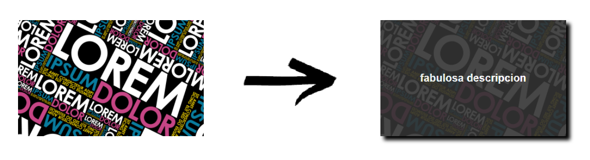

Transforma tus imágenes

Cardify es un plugin de jQuery que dado un contenedor busca todas las imágenes que encuentre dentro del contenedor y las reemplaza por un nuevo elemento figure que contenga la imagen y además un figcaption con el texto del atributo alt de la imagen cuando se haga hover.
- Descarga Cardify
- Incluyelo en tu carpeta de proyecto
- Linkealo desde el index.html mediante una etiqueta script
¿Cómo instalar cardify?
<script src="index.js"></script>
<script src="https://ajax.googleapis.com/ajax/libs/jquery/3.2.1/jquery.min.js"></script>
- Tan solo debes elegir el contenedor en el que quieres que se apliquen los efectos cardify desde tu hoja javascript de la siquiente manera:
¿Cómo usar cardify?
$(container).cardify();